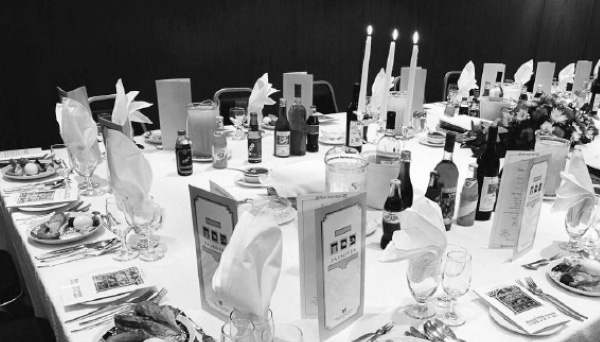

Shlichus Talk: Preparing a Chabad Public Seder
An enthusiastic conversation illustrating the planning process in preparing a public seder

Yitzi: True. This time, it’s about making a public seder.
Shneur: That’s before we get involved in the annual Mivtza Matza.
Yitzi: We will talk about that soon, the next time. Now let’s get down to work.
Shneur: The papers and pens are here. Let us write down the jobs.
Chaim: The first thing is a hall that is not located in a mall or public place which desecrates Shabbos and Yom Tov. And that the management of the hall agrees to all our requests regarding kashrus and a special mashgiach of our own.
Yitzi: At the same time, the hall needs to be in the center of town so that many people will be able to get there without driving there and back. They are not all fully shomrei Torah and mitzvos yet and we have to beware of causing them to blunder.
Shneur: In the hall there must be total control. We need to talk to our graphic designer and ask him to design some colorful signs with basic instructions and quotes from the Hagada.
Yitzi: The signs must have a special message about Moshiach and Geula. The entire Yom Tov of Pesach is about emuna and “as in the days you went out of the land of Egypt, I will show you wonders,” now too, with the true and complete Geula.
Chaim: A big Yechi sign in the center of the hall, a huge picture of the Rebbe, Moshe Rabbeinu of our generation, and of course we need to make sure we have enough Hagados, the Hagada with P’ninei Geula U’Moshiach so people will have something to take home and will be able to maintain the Pesach atmosphere in their home. After all, Chabad custom is not to say Chasal Siddur Pesach because Pesach is ongoing.
Shneur: After we have a hall, I think we need to work on the food that we will be serving the public. It needs to be mehudar for Pesach as well as tasty, varied and in large enough quantities so that people will have plenty without having to ask for more. The Rebbe instructed those involved in public s’darim that there be enough food for all so people will feel at home and not like uncomfortable guests.
Chaim: That’s what we say the night of the seder: kol dichfin yeisei v’yeichol – whoever is hungry should come and eat. Who fulfills this with the greatest hiddur? The Rebbe’s shluchim, of course.
Yitzi: Very true. I think it’s worthwhile to bring a special chef who knows how to cook with the Chabad Pesach ingredient list. People will enjoy it and it will give them an authentic Pesach experience.
Shneur: We need to think about the wine for the four cups. We should buy several types of wine so people will have a choice and will find something they enjoy. We can put stickers on each bottle with a message about Geula and Moshiach that relates to Pesach. That provides another opportunity to instill a Moshiach message.
Yitzi: Great idea!
Chaim: Shneur always has original ideas …
Shneur: We also need to buy a lot of handmade matza so that every man will have three matzos for the ke’ara.
Yitzi: Yes, that is one of the biggest accomplishments of the public seder, that people who are not Lubavitch will get to eat handmade shmura matza with all the Chabad hiddurim at least the first night of Pesach when we fulfill the mitzva of eating matza m’d’oraisa.
Chaim: It’s a lot … We also have to reckon with the number of people coming, and also think about manpower, who can guide the people in what to do with the matzos on the ke’ara and how to deal with the ke’ara altogether, with all its components.
Shneur: We need to do a lot of publicity in the community to get as many young couples as we can, who will sit at the tables and explain things, in addition to the general emcee who I think should be Yitzi.
Yitzi: What about you? I think you would be better at it.
Shneur: I can help you but you have a strong voice and speak well.
Chaim: Stop arguing. Each of you will run a different part of the Seder so you can get back your strength in between.
Shneur: Okay. The main thing is to do a lot of publicity in the right neighborhoods. That is also an instruction from the Rebbe, to do a lot of publicity. Even if people are not the type to participate, at least they will see the ads and they might be curious enough to show up. We have to give them that chance!
Yitzi: All this costs a lot of money. We need to find donors who will fund it.
Chaim: At one time, the Rebbe participated in a large part of the public s’darim expenses.
Yitzi: That is what spurs us on to continue and do this holy shlichus, despite the huge financial difficulties. Public s’darim often get people to become more involved in Torah and mitzvos later on.
Shneur: Don’t forget that after the public seder we need to go home to our families and make a seder with them. We need to have a lot of energy for that night so we can fulfill our personal obligations afterward.
Chaim: I’m not worried about that; we have the Rebbe. He is our meshaleiach and he gives us the necessary strength. With Hashem’s help we will give him a lot of nachas; the main thing is we should bring him already, for the true and complete Geula.
Shneur and Yitzi: Amen!
Yitzi: We have a lot of work to do. Now, let’s divide the jobs and remember that every moment of this holy work hastens the hisgalus of the Rebbe. Then we will be able to eat the korban Pesach in Yerushalayim at the third Beis HaMikdash!
Beis Moshiach (staff). "Shlichus Talk: Preparing a Chabad Public Seder." Beis Moshiach, no. 923 (April 9, 2014).